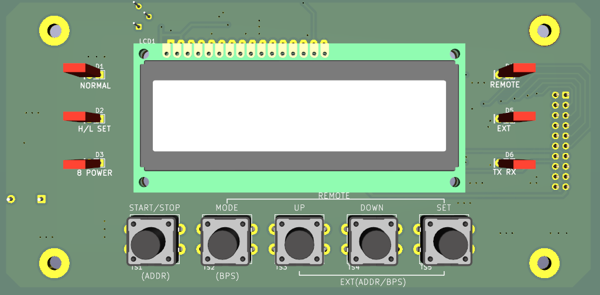
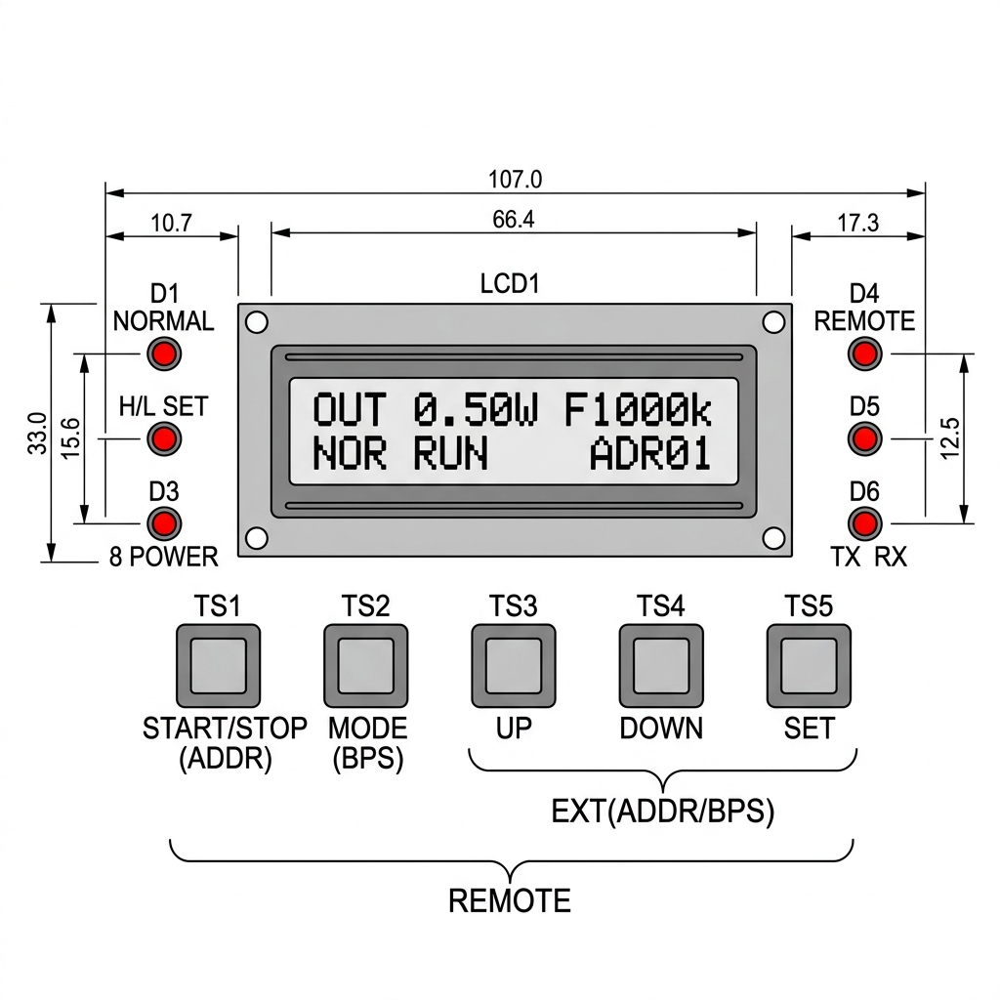
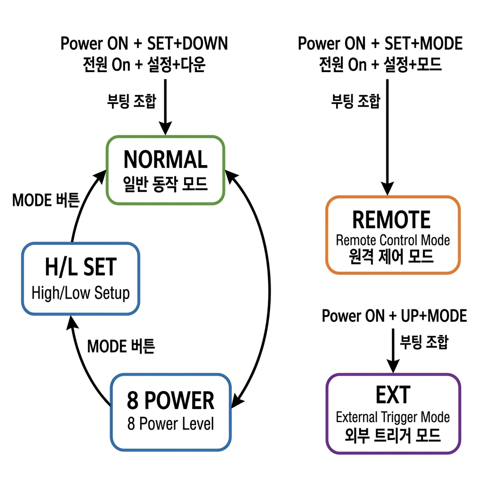
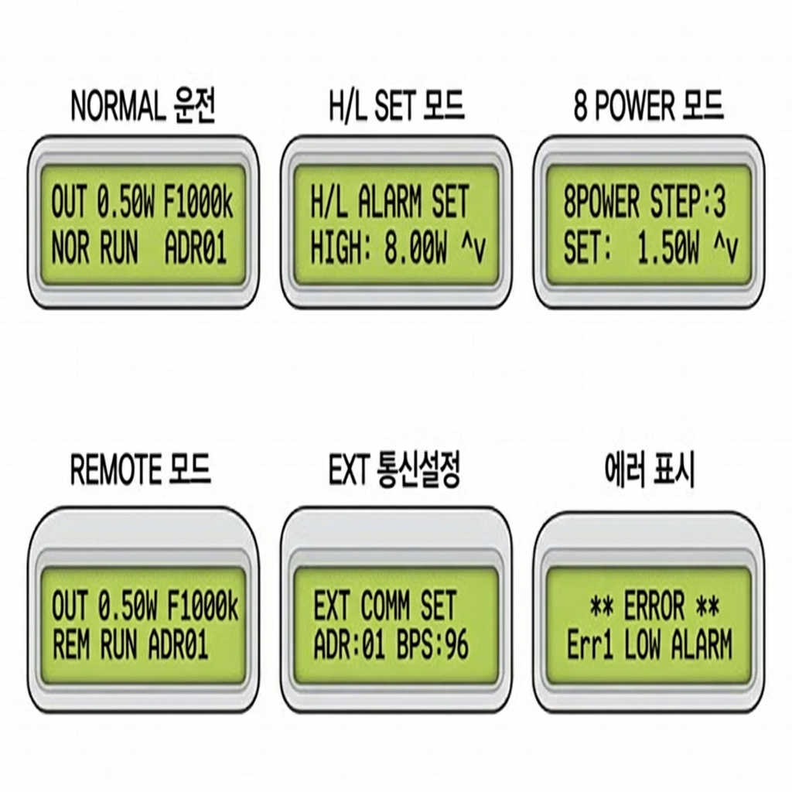
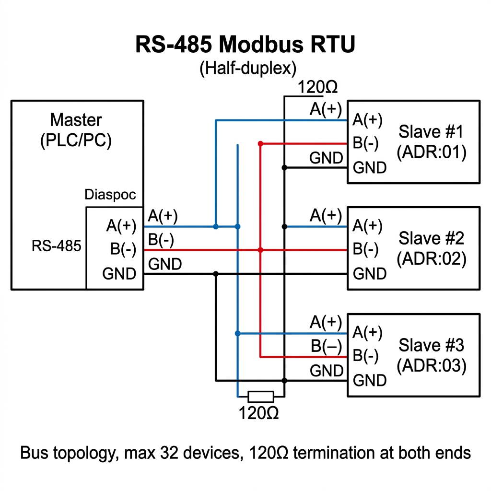

문서 버전: v1.0 | 적용 보드: STM32G474 기반
작성일: 2026-05-07
| 항목 | 사양 |
|---|---|
| 작동 주파수 | 10CH (CH0~CH9), 500 kHz ~ 2.2 MHz |
| 최대 출력 | 10 W |
| 출력 설정 범위 | 0.10 W ~ 10.00 W (0.01 W 단위) |
| 표시 장치 | LCD1602 (2행 × 16문자) |
| 상태 LED | 6개 (NORMAL / H·L SET / 8 POWER / REMOTE / EXT / TX RX) |
| 버튼 | 5개 (START/STOP, MODE, UP, DOWN, SET) |
| 통신 | RS-485 Half-Duplex, Modbus RTU |
| 기본 통신 속도 | 9600 bps |
| 운전 모드 | NORMAL / REMOTE / EXT |

[그림 2-1] 전면 조작 패널 배치도
| 위치 | 명칭 | 의미 |
|---|---|---|
| 좌측 D1 | NORMAL | NORMAL 모드 활성 시 점등 |
| 좌측 D2 | H/L SET | HIGH/LOW 알람 설정 모드 시 점등 |
| 좌측 D3 | 8 POWER | 8단계 출력 설정 모드 시 점등 |
| 우측 D4 | REMOTE | REMOTE 모드 활성 시 점등 (운전 중 점멸) |
| 우측 D5 | EXT | EXT(통신) 모드 활성 시 점등 |
| 우측 D6 | TX RX | RS-485 통신 송수신 시 점멸 |
| 버튼 | 실크 인쇄 | 기본 기능 | EXT 부가기능 |
|---|---|---|---|
| TS1 | START/STOP | 발진 시작/정지 | ADDR 설정 진입 |
| TS2 | MODE | 모드/화면 전환 | BPS 설정 전환 |
| TS3 | UP | 값 증가 | ADDR/BPS 값 증가 |
| TS4 | DOWN | 값 감소 | ADDR/BPS 값 감소 |
| TS5 | SET | 선택/확정/저장 | 설정 확정 저장 |
| 위치 | 표시 내용 | 예시 |
|---|---|---|
| 1행 좌측 | 출력 전력 | OUT 0.50W |
| 1행 우측 | 주파수 | F1000k |
| 2행 좌측 | 운전 모드 | NOR / REM / EXT |
| 2행 중앙 | RUN/STOP | RUN / STOP |
| 2행 우측 | 통신 주소 | ADR01 |
⚠ 경고: SENSOR 단자가 OPEN 상태이면 전원 투입 즉시 Err7이 발생한다.
전원 ON → LCD 초기화면 → NORMAL 모드 자동 진입

[그림 4-1] 모드 전환 흐름도
| 키 조합 | 진입 모드 | 설명 |
|---|---|---|
| 전원 ON + SET + DOWN 유지 | NORMAL | 강제 NORMAL 복귀 |
| 전원 ON + SET + MODE 유지 | REMOTE | 외부 접점 제어 |
| 전원 ON + UP + MODE 유지 | EXT | 통신 제어 |

[그림 5-1] 모드별 LCD 화면 예시
로컬 패널에서 직접 운전하는 기본 모드.
| 키 | 동작 |
|---|---|
| START/STOP | 발진 시작 ↔ 정지 토글 |
| UP / DOWN | 출력 설정값 ±0.01 W 조정 |
| SET | 현재 설정값 Flash 저장 |
| MODE | H/L SET → 8 POWER → NORMAL 순환 |
권장 운전 절차: ①UP/DOWN으로 출력 조정 → ②START/STOP으로 시작 → ③실측 안정화 확인 → ④SET 저장
HIGH/LOW 알람 임계값 설정 모드.
| 키 | 동작 |
|---|---|
| SET | HIGH ↔ LOW 항목 전환, 저장 |
| UP / DOWN | 알람 임계값 조정 |
| MODE | 8 POWER 모드로 이동 |
| START/STOP | 동작 없음 (실수 방지) |
💡 HIGH는 정상 출력보다 충분히 높게, LOW는 충분히 낮게 설정. 과도하게 좁으면 오경보 발생.
Step별 출력 레시피 운전 모드.
| 키 | 동작 |
|---|---|
| SET | Step 선택/확정 |
| UP / DOWN | Step별 출력값 조정 |
| MODE | NORMAL 모드로 복귀 |
외부 접점 신호로 ON/OFF 제어. 로컬 키 입력 제한.
진입: 전원 ON + SET + MODE | 복귀: 전원 ON + SET + DOWN
RS-485 Modbus RTU 통신 및 주소/BPS 설정.
| 키 | 동작 |
|---|---|
| START/STOP | ADDR 설정 화면 진입 |
| MODE | ADDR ↔ BPS 항목 전환 |
| UP / DOWN | 값 변경 |
| SET | 확정 저장 |
진입: 전원 ON + UP + MODE | 복귀: 전원 ON + SET + DOWN
운전순서: ①EXT 진입 → ②START/STOP(ADDR) → ③MODE(항목) → ④UP/DOWN(값) → ⑤SET(저장) → ⑥마스터 Modbus 시작
| 구분 | 조합 | 동작 |
|---|---|---|
| 에러 해제 | MODE + DOWN (2초) | Err1/Err2/Err5 해제 |
| NORMAL 진입 | 전원 ON + SET + DOWN | NORMAL 모드 |
| REMOTE 진입 | 전원 ON + SET + MODE | REMOTE 모드 |
| EXT 진입 | 전원 ON + UP + MODE | EXT 모드 |
| EXT ADDR/BPS | START/STOP → MODE → UP/DOWN → SET | 통신 설정 |
⛔ Err7/Err8은 키 조합으로 해제 불가. 반드시 전원 OFF → 센서 확인 → 전원 ON.
| 채널 | 주파수(kHz) | 비고 |
|---|---|---|
| CH0 | 500 | 저주파 시작 |
| CH1 | 700 | |
| CH2 | 900 | |
| CH3 | 1100 | |
| CH4 | 1300 | |
| CH5 | 1500 | |
| CH6 | 1700 | |
| CH7 | 1900 | |
| CH8 | 2100 | |
| CH9 | 2200 | 상한 채널 |
ℹ 채널 변경 시 1초간 출력 정지 후 새 주파수 전환. 고주파(2MHz↑)는 단계 상승 권장.
| 코드 | 명칭 | 발생 조건 | 해제 방법 |
|---|---|---|---|
| Err1 | LOW ALARM | 출력 < LOW 임계, 5초 지속 | MODE+DOWN(2초) |
| Err2 | HIGH ALARM | 출력 > HIGH 임계, 5초 지속 | MODE+DOWN(2초) |
| Err5 | TRANSDUCER | 진동자/부하 이상, 5초 지속 | MODE+DOWN(2초) |
| Err6 | SETTING ERROR | 허용 범위 밖 설정 시도 | 값 재입력 |
| Err7 | SENSOR OFF | 정지 중 SENSOR 오픈 | 전원 사이클 |
| Err8 | SENSOR RUN | 운전 중 SENSOR 오픈 | 전원 사이클 |
Err1: 출력선/부하 확인 → LOW 임계값 확인 → MODE+DOWN(2초) 해제 → 재기동
Err2: 설정값/부하 비교 → HIGH 임계값 재검토 → MODE+DOWN(2초) 해제 → 단계 재시험
Err5: 트랜스듀서/케이블 점검 → MODE+DOWN(2초) 해제 → 저출력 재시험
Err7/Err8: 출력 정지 확인 → SENSOR 물리 점검 → 전원 OFF → SENSOR 정상 확인 → 전원 ON

[그림 9-1] RS-485 배선도
| 항목 | 사양 |
|---|---|
| 규격 | RS-485 Half-Duplex |
| 배선 | A/B 2선 + GND |
| 종단 저항 | 라인 양단 120 Ω |
| 보레이트 | 9600 / 19200 / 38400 / 115200 bps |
| 데이터 | 8-N-1 또는 8-E-1 |
| CRC | CRC-16 (0xA001) |
| FC | 기능 | NORMAL | REMOTE | EXT |
|---|---|---|---|---|
| 0x03 | Holding Register 읽기 | ○ | ○ | ○ |
| 0x06 | 단일 Register 쓰기 | △ | △ | ○ |
| 0x10 | 복수 Register 쓰기 | △ | △ | ○ |
제어 그룹:
| 주소 | R/W | 항목 | 단위/범위 |
|---|---|---|---|
| 0x0000 | R/W | RUN 제어 | 0=OFF, 1=ON |
| 0x0001 | R/W | 출력 설정값 | ×0.01W (10~1000) |
| 0x0002 | R | 실측 출력 | ×0.01W |
| 0x0003 | R/W | 주파수 채널 | 0~9 |
| 0x0004 | R | 현재 주파수 | ×0.1kHz |
| 0x0005 | R | 상태 플래그 | bit field |
| 0x0006 | R/W | 운전 모드 | 0=NOR, 1=REM, 2=EXT |
| 0x0007 | R/W | 슬레이브 주소 | 1~247 |
알람/진단 그룹:
| 주소 | R/W | 항목 | 범위 |
|---|---|---|---|
| 0x0010 | R/W | HIGH 알람 | ×0.01W |
| 0x0011 | R/W | LOW 알람 | ×0.01W |
| 0x0012 | R | 에러 상태 | bit field |
| 0x0013 | W | 에러 리셋 | 1=리셋 |
| 0x0017 | R | 펌웨어 버전 | major/minor |
상태 읽기: [ADDR] [03] [00 00] [00 08] [CRC] → 0x0000부터 8개 읽기
출력 설정: [ADDR] [06] [00 01] [00 64] [CRC] → 1.00W (100×0.01)
채널 설정: [ADDR] [06] [00 03] [00 09] [CRC] → CH9
| 증상 | 원인 후보 | 조치 |
|---|---|---|
| 통신 응답 없음 | A/B 반전, 주소/BPS 불일치 | 배선·주소·속도 재확인 |
| 출력 직후 정지 | SENSOR 오픈, 알람 과민 | SENSOR·알람값 점검 |
| 출력 ≠ 목표 | 부하 변동 | 저출력 재튜닝 후 단계 상승 |
| Err7 반복 | SENSOR 배선 불안정 | 센서 회로 물리 점검/교체 |
| REMOTE 불안정 | 접점 바운스 | 접점 품질 개선, 3초 간격 |
| 주기 | 점검 항목 |
|---|---|
| 일일 | 케이블/커넥터 이탈, LCD/LED 정상, 알람 이력 |
| 주간 | 출력 재현성, 통신 응답, 주소 충돌 |
| 월간 | 트랜스듀서 절연, 알람 임계값, 펌웨어/설정 백업 |
출하 전:
☐ 기본 부팅, LCD 표시 정상
☐ NORMAL/REMOTE/EXT 진입 조합 확인
☐ START/STOP 동작 확인
☐ 알람 해제 조합 확인 (Err7 제외)
☐ RS-485 기본 통신 확인 (FC03)
설치 후:
☐ 현장 주소 할당
☐ BPS/패리티 일치
☐ 저전력 시험
☐ 보호 동작(Err7/Err8) 확인
| 항목 | 키 조합 |
|---|---|
| NORMAL | PWR ON + SET+DOWN |
| REMOTE | PWR ON + SET+MODE |
| EXT | PWR ON + UP+MODE |
| ADDR/BPS | START/STOP → MODE → UP/DOWN → SET |
| ERROR RESET | MODE+DOWN (2s) |
본 문서는 기존 HS AUP Multi Generator 매뉴얼의 7세그먼트(FND) 표시를 LCD1602 기반 UI로 전환한 운전 매뉴얼이다.
펌웨어 RC 확정 후 v1.0 정식 발행한다.